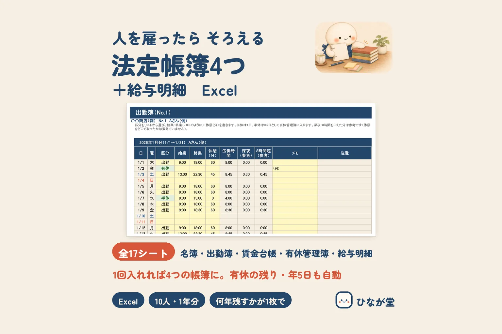

はじめてパートさんやアルバイトさんを雇うと、お給料のほかに「帳簿」をそろえることになります。労働者名簿・賃金台帳・出勤簿・年次有給休暇管理簿。名前は聞いたことがあっても、何を書いて何年残すのかは意外と知られていません。条文をもとに1つずつ見ていきます。
そろえる帳簿と、残す年数の一覧
| 帳簿 | 主に書くこと | 残す年数 | 根拠 |
|---|---|---|---|
| 労働者名簿 | 名前・生年月日・履歴・性別・住所・仕事の種類・雇い入れた日・辞めた日とその理由 など | 5年（当分の間は3年） | 労働基準法 第107条・第109条、施行規則 第53条 |
| 賃金台帳 | 名前・性別・賃金の計算期間・働いた日数と時間・時間外／休日／深夜の時間・基本給や手当ごとの額・控除の額 | 5年（当分の間は3年） | 労働基準法 第108条・第109条、施行規則 第54条 |
| 出勤簿（労働時間の記録） | 働いた日ごとの始業・終業の時刻 など | 下の説明をご覧ください | 厚生労働省のガイドライン、労働安全衛生規則 第52条の7の3 |
| 年次有給休暇管理簿 | 働く人ごとの、有休を取った時季・日数・基準日 | 有休を与えた期間中と、その後5年（当分の間は3年） | 施行規則 第24条の7 |
労働基準法 第109条では、労働者名簿・賃金台帳などを「5年間」残すことになっていますが、附則 第143条で「当分の間」は3年と読みかえられています。年次有給休暇管理簿も、施行規則の附則（第71条）で同じように当分の間3年です。
何年を数えはじめる日は、帳簿ごとに違います（施行規則 第56条）。労働者名簿は辞めた日（または亡くなった日）から、賃金台帳は最後に書いた日から（その賃金の支払期日のほうが後なら、支払期日から）、が目安です。
労働者名簿：雇ったら1人ずつ作る
労働基準法 第107条では、事業場ごとに、働く人1人ずつ（日々雇い入れる人を除く）名簿を作り、変わったことがあれば遅れずに直すことになっています。書くことは施行規則 第53条にあり、ふだん30人未満の事業場では「仕事の種類」を省けます。
辞めた人の名簿も、残す期間が過ぎるまで捨てずに残します。
賃金台帳：お給料を払うたびに書く
労働基準法 第108条では、賃金を払うたびに、遅れずに書くことになっています。働いた日数・時間のほか、時間外・休日・深夜（午後10時から午前5時）に働いた時間も書く項目です（施行規則 第54条）。
基本給や手当は「その他」でまとめず、種類ごとに書きます。控除も、条文は「控除した額」ですが、国の様式のように内訳を分けておくと、あとで確かめやすくなります。賃金の計算そのもの（割増賃金・税金・社会保険料）は、給与計算ソフトや税理士・社会保険労務士の計算などで出した額を写します。
出勤簿：労働時間の記録として残す
「出勤簿」という名前を名指しした条文は、見つけられませんでした。ただ、厚生労働省の「労働時間の適正な把握のために使用者が講ずべき措置に関するガイドライン」では、出勤簿やタイムカードなどの労働時間の記録も、労働基準法 第109条にもとづいて残す書類として書かれています（ガイドラインは3年と書いていますが、これは第109条が5年に改められる前の書き方です）。これとは別に、労働安全衛生規則 第52条の7の3 では、働く人の健康を守るための「労働時間の状況」の記録を作って3年残すことになっています。2つは目的の違う記録ですが、同じタイムカードや出勤簿で両方をまかなえる場合もあります。
どれだけ残すかで迷ったら、労働基準監督署や社会保険労務士に確かめると安心です。
年次有給休暇管理簿と、有休の日数の目安
施行規則 第24条の7 では、有休を取った時季・日数・基準日を、働く人ごとに書いた「年次有給休暇管理簿」を作ることになっています。有休の日数は労働基準法 第39条で決まっています。
- 雇い入れてから6か月続けて働き、決められた日の8割以上出勤した人に、10日
- そのあと1年ごとに、11日・12日・14日・16日・18日・20日（6年6か月以上は20日）
- 週に働く日が少ない人（週30時間未満で、週4日以下など）は、日数が少なくなります（施行規則 第24条の3 の表）
- 年に10日以上の有休がある人には、基準日から1年以内に5日を取ってもらう決まりがあります（第39条 第7項）。本人が取った日や、労使の取り決めで取った日は、5日から引けます（第8項）
有休を使える期間は、厚生労働省の案内では、与えた日から少なくとも2年とされています。古い分から使ったことにするかどうかは、就業規則などで決めておくとわかりやすくなります（決めていないときは、繰り越した分から使うと考えられる、と案内されています）。
帳簿を続けるコツ
- 1冊にまとめてもよい…労働者名簿・賃金台帳・年次有給休暇管理簿は、あわせて作ってもかまいません（施行規則 第55条の2）
- 名前や雇い入れた日は1か所に書く…同じことを帳簿ごとに書くと、書き写しのまちがいが起きやすくなります
- 出勤簿 → 賃金台帳の順で、締め日に写す…日数と時間は出勤簿から数え、台帳に書きます
- 有休は「取った日」を出勤簿に書く…管理簿の残りの日数は、その日を数えれば出せます
- 1年に1冊にして、年ごとに残す…残す年数が過ぎたかどうかがわかりやすくなります
- 住所や生年月日が入るので、置き場所に気をつける…鍵のかかる場所や、パスワードのかかったパソコンに置きます
よくある質問
パート・アルバイト1人だけでも、帳簿はいりますか？
労働者名簿と賃金台帳は、働く人ごとに作る決まりで、パートやアルバイトも含まれます（日々雇い入れる人は名簿の対象外です）。何人から、という書き方は条文にはありません。
国の様式を使わないといけませんか？
厚生労働省や労働局の様式（労働者名簿・賃金台帳）がありますが、書く項目がそろっていれば、自分で作った表でもかまいません。パソコンのファイルで残すときの細かい決まりは、この記事では確かめきれていないため、労働基準監督署などにご確認ください。
ひなが堂の帳簿のひな形：無料のお試し版と全部入り版
ひなが堂では、ここまでの4つの帳簿と給与明細を1つにした Excel の表を BOOTH でお分けしています。最初のシートに働く人を1回入れると、労働者名簿・出勤簿・賃金台帳・年次有給休暇管理簿に名前と日付が入ります。出勤簿に「有休」と書くと、有休の残り・年5日まであと何日か・消える日が自動で出ます。賃金の計算はしないので、金額は給与計算ソフトなどで出した額を写します。
- 無料のお試し版…働く人3人まで、出勤簿・賃金台帳・給与明細は最初の1か月分
- 全部入り版（1,480円）…働く人10人まで、12か月分（1年分）と賞与2回分
パソコンの Microsoft Excel（Windows 版）で動作を確かめています。有休の日付は、ひなが堂の数え方の目安です。就業規則で決まりがあるときは書きかえて使えます。くわしくは商品のページと、無料のお試し版のページにまとめています。
まとめ
人を雇ったら、労働者名簿・賃金台帳・出勤簿（労働時間の記録）・年次有給休暇管理簿の4つをそろえます。労働者名簿・賃金台帳・年次有給休暇管理簿の残す年数は、条文では5年、当分の間は3年です。名前などは1か所に書き、出勤簿から台帳へ締め日に写す流れにすると続けやすくなります。わからないところは、労働基準監督署や社会保険労務士に確かめてください。
ご注意この記事は、法令や厚生労働省の案内をもとにした一般的なまとめです（確認日は下に書いています）。改正されることがあります。お店や会社にどう当てはまるかは、所管の労働基準監督署・社会保険労務士にご確認ください。
出典・確認日
この記事の期限・数字は、次の公式の情報で確かめました（確認日：2026-11-12）。今後の制度変更などで目安が変わることがあります。最新の情報は、お住まいの市区町村や各機関のホームページでご確認ください。
- 労働基準法 第39条（年次有給休暇）・第107条（労働者名簿）・第108条（賃金台帳）・第109条（記録の保存 5年）・附則 第143条（当分の間 3年）
https://laws.e-gov.go.jp/law/322AC0000000049 - 労働基準法施行規則 第24条の3（週の所定労働日数が少ない人の日数）・第24条の7（年次有給休暇管理簿）・第53条・第54条・第55条の2・第56条・附則 第71条
https://laws.e-gov.go.jp/law/322M40000100023 - 労働安全衛生規則 第52条の7の3（労働時間の状況の記録 3年）
https://laws.e-gov.go.jp/law/347M50002000032 - 厚生労働省「労働時間の適正な把握のために使用者が講ずべき措置に関するガイドライン」（平成29年1月20日）
https://www.mhlw.go.jp/file/06-Seisakujouhou-11200000-Roudoukijunkyoku/0000149439.pdf - 厚生労働省 スタートアップ労働条件「年次有給休暇はいつまで請求を認めなければならないのでしょうか？」（2年・繰り越し分からの推定）
https://www.startup-roudou.mhlw.go.jp/qa/zigyonushi/yukyu/q6.html